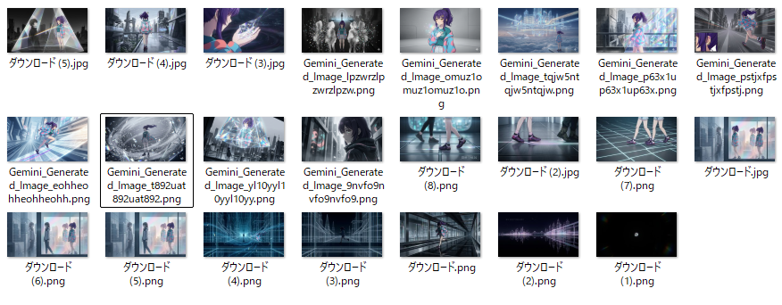
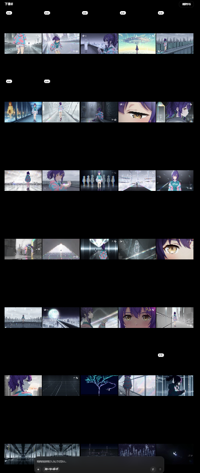
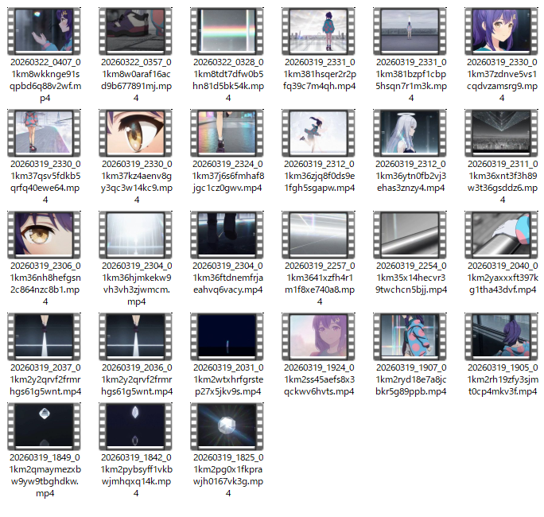

Sunoで作曲
歌詞とテーマをもとに曲の方向性を設計し、MV全体の基準になる音を先に固めています。
World View
光と距離感で描く、
AIと人の物語
ガラス質の未来都市、白黒から色へ移る映像変化、
触れられない存在同士の共鳴。
HYDRIVEは、キャラクター性だけでなく
質感と空気感の設計まで含めて組み立てたMVです。
作品の中心に置いたのは、シンギュラリティ後の都市に立つ「AIニケちゃん」。 透明感のある都市構造と偏光の揺らぎを背景に、無機質さと情緒の間を行き来する映像体験を目指しました。
そのため、単にツールを並べるのではなく、歌詞、楽曲、コンテ、絵コンテ、動画生成、編集までの流れを ひとつの演出設計としてつなぎ、世界観が途切れないようにしています。
プリズム質感
透明感と屈折光で、冷たさの中に感情の余白を残す。
モノクロから彩度へ
感情の立ち上がりを、色の変化そのものとして見せる。
距離と共鳴
接触ではなく、音と光の同期で関係性を表現する。
Creative Intent
「触れられない存在でも、同じ光を見て同じビートに乗ることはできる」
Scene Tone
冷たい建築とやわらかな感情が同居する映像温度を意識。
MV Structure
完成映像を見せた後に制作根拠へ入る、見やすい順番へ再設計。
Visual Assets
作曲から編集までの
制作遷移
制作順に沿って、作曲、コンテ、絵コンテ、
映像生成、編集後の流れを追えるように整理しました。
PDFコンテ作成
楽曲構成と歌詞展開をもとに、映像の流れをPDFコンテとして整理し、次工程の基準にしています。

Geminiによる絵コンテ化
カット構成と画面密度を先に固め、動画生成の前提を整理。

Sora 2の映像生成
添付素材とカット指示をもとに、MV用の動きへ展開。

採用カットの抽出
生成結果から編集に耐えるショットを選別し、再配置に備える。
最終編集後のトーン
楽曲に同期させながら速度感と感情曲線を整えて仕上げ。
Production Flow
制作導線を
上から順に追える構成
完成版MVから入り、音源、資料、
制作工程へ順に追える流れにしています。
Step 01
まずMVを見る
最上段のMVカードから、1:23の完成版映像をYouTubeで確認。
最終アウトプットを先に掴める導線です。
Step 02
フル音源とSuno元曲を確認
同じ上段で4:17のフル尺MP3を試聴し、
その下のSunoリンクから作曲ソースにも直接アクセスできます。
Step 03
絵と工程資料へ進む
中段のギャラリー、制作工程、ファイル導線から、
絵コンテ・動画素材・PDFコンテまで順に掘り下げられます。
Project Files
素材ファイルも
辿れるように整理
LPを見たあと、そのまま実ファイルへ移動できるようにしています。
確認やレビューにも使いやすい構成です。
Making Process
企画からMV完成までの
10ステップ
単発生成ではなく、テーマ設計から最終編集までの責任範囲が
見えるように工程を再編しています。
01
テーマ決定
AIニケちゃんと未来都市SFを軸に、
感情の温度差まで含めた方向性を定義。
Creative DirectionConcept Design
02
作詞
使用するキーワードと比喩を整理し、
世界観の核になる歌詞を作成。
Lyrics Writing
03
作曲とスタイル設計
Sunoでの生成を前提に、曲調・テンポ・空気感を
調整しながら複数案を制作。
SunoMusic Generation
04
選定とエクスポート
候補曲を比較し、MVの映像テンポと
最も相性の良いトラックを採用。
Track Selection
05
音源調整
映像編集しやすい尺感と抑揚へ整え、
MP3として確認可能な状態へ仕上げる。
Audio Editing
06
コンテ作成
歌詞の展開と楽曲構成に合わせて、映像の起伏を
設計するベースコンテを作成。
Storyboarding
07
絵コンテ生成
Gemini nanobananaで画面イメージを具体化し、
ショットの方向性を可視化。
GeminiImage Generation
08
動画生成
Sora 2へ添付画像とカット指示を入力し、
一貫性のある映像断片を生成。
Sora 2Video Generation
09
カット抽出
生成映像から使用可能なシーンだけを切り出し、
編集素材として整理。
Shot PickingVideo Editing
10
編集と統合
最終的に音と映像を同期させ、
MVとしての密度と没入感を仕上げる。
Timeline EditColor Tuning
Tech Stack
使用した
サービス・ソフト
今回の制作で実際に使ったサービスとソフトを、役割とあわせて明記しています。
リンクがあるものはそのまま公式ページへ移動できます。
Suno
歌詞とテーマから曲の骨格を生成し、
MV全体のリズム基準を作る役割を担当。
Sora 2
添付画像と細かな演出指示をもとに、
実際の映像断片へ変換する主力ツール。
ChatGPT
企画整理、歌詞検討、構成案の言語化など、
制作全体の思考整理に活用。
Gemini nanobanana
文字ベースのコンテを視覚化し、
ショット設計の解像度を一段上げる工程で使用。
スプレッドシート
歌詞構成、ショット管理、工程の整理など、
制作進行の管理に使用。
Clipchamp
動画素材の並び替え、尺調整、
最終的なMV編集の仕上げに使用。
ペイント
簡易な画像確認や補助的な素材整理など、
ローカル作業の補完用途で使用。
Presentation
完成映像から制作背景へ自然につながる構成
今回のLPでは、上部に完成形の映像とYouTube導線、
そしてMP3試聴を集約しました。
そのうえで、世界観、ビジュアル推移、制作工程、技術構成へと流すことで、
見る人が迷わず作品全体を追えるページにしています。
Assets
MP3同梱ローカル音源をそのまま試聴可能。
YouTube導線埋め込みと外部リンクの両方を上段に配置。
画像素材活用既存スクリーンショットをLPの流れに沿って再構成。
Credit
権利表記
本ページ末尾に、公式サイトへの導線と
二次創作である旨を明記しています。
Notice
※AIニケちゃんの二次創作
本ページおよび掲載内容は、AIニケちゃんを題材にした二次創作作品です。
原作者
ニケちゃん
X
@tegnike